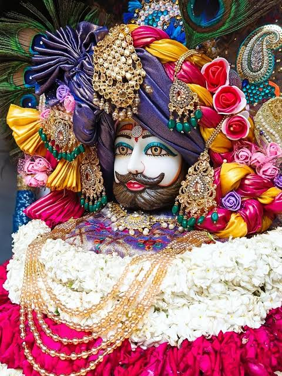

Among the many legendary warriors of the Mahabharata, names such as Bhishma, Dronacharya, Karna, Arjuna, and Bhima are remembered with great honor.
Yet there was another warrior whose participation in the Kurukshetra War might have completely changed its outcome.
His name was Barbarika.
Barbarika was the grandson of the mighty Bhimasena.
He was the son of Ghatotkacha, who himself was born to Bhima and the Rakshasa princess Hidimba.
His mother is identified in different traditions as Maurvi (also known as Ahilavati).
From birth, Barbarika possessed extraordinary brilliance, courage, and a deep sense of righteousness.
Even as a child, he displayed exceptional talent in the art of warfare.
He received military training from his mother and the great warriors of his lineage.
Later, he performed severe penance to please Lord Shiva.
Pleased by his devotion, Lord Shiva granted him three divine and infallible arrows.
The power of these three arrows was so extraordinary that they alone could determine the outcome of an entire war.
He also received a divine bow, making the three arrows even more formidable in battle.
Each of the three arrows possessed a unique purpose.
The first arrow marked everything that was to be destroyed.
The second arrow marked everything that was to be protected.
The third arrow destroyed every target marked by the first arrow before returning to Barbarika's quiver.
It is said that even if only a single blade of grass were marked, the arrow would unfailingly find and destroy it.
If an entire army were marked instead, the same arrow could annihilate the whole force with equal certainty.
For this reason, Barbarika believed that three arrows were sufficient to end any war.

Yet his greatest strength was not his celestial weapons.
It was a solemn vow that he had taken.
Barbarika had pledged that he would always fight for the weaker side in any battle.
He believed that the true duty of a Kshatriya was to stand beside those who were weaker and protect them.
As time passed, the conflict between the Kauravas and the Pandavas finally grew into the great war of Kurukshetra.
When Barbarika learned that history's greatest battle was about to begin, he resolved to take part in it.
He took up his divine bow and his three infallible arrows before seeking his mother's blessing.
She blessed her son, but before allowing him to depart, she asked him for one final promise.
"My son, always fight for the side that is weaker. Never use your strength in support of injustice."
Barbarika bowed before his mother and vowed that he would honor this promise throughout his life.
He did not yet realize that this very vow would soon become the greatest moral dilemma of his life.
As he journeyed toward Kurukshetra, he encountered an elderly Brahmin who wished to test his extraordinary power.
That seemingly ordinary meeting would change the course of the Mahabharata forever.
The Story of BarbarikaAs Barbarika journeyed toward Kurukshetra carrying his divine bow and three infallible arrows, he encountered an elderly Brahmin along the way.
The old man, however, was no ordinary Brahmin.
It was Lord Krishna Himself, disguised in order to test the extraordinary warrior.
Observing Barbarika's radiant appearance, his magnificent bow, and the mere three arrows resting in his quiver, the Brahmin smiled and asked,
"My son, where are you going?"
Barbarika respectfully replied,
"I am on my way to participate in the great war of Kurukshetra."
The Brahmin looked at the three arrows and asked with curiosity,
"Only three arrows? Do you truly believe that three arrows are enough for such a great war?"
Barbarika answered calmly,
"These three arrows are enough to conquer any battle in the world. If I wish, a single arrow can destroy an entire army."
The Brahmin smiled in disbelief.
"If your arrows are truly so powerful, then show me their strength."
Nearby stood a great Peepal tree.
Pointing toward it, the Brahmin said,
"Pierce every leaf on this tree."
Barbarika lifted his bow, invoked the sacred mantra, and released a single arrow.
With incredible speed, the arrow began marking every leaf upon the tree.
At that very moment, Lord Krishna secretly plucked one leaf and hid it beneath His foot.
After piercing every visible leaf, the arrow suddenly began circling around Krishna's feet.
The Brahmin asked in astonishment,
"Why is your arrow circling around my feet?"
Barbarika replied,
"You must be hiding one of the leaves beneath your foot. My arrow will not rest until it reaches its target. If you do not move your foot, it will pierce your foot as well to strike the hidden leaf."
Hearing this, Krishna smiled and lifted His foot.
The hidden leaf immediately became visible.
The arrow pierced it without fail and then returned to Barbarika's quiver exactly where it had been before.
Krishna now understood that Barbarika had spoken the truth.
The power of his three divine arrows was no exaggeration.
After witnessing this, Krishna asked another question.
"Which side will you support in the coming war—the Pandavas or the Kauravas?"
Without hesitation, Barbarika replied,
"I have promised my mother that I will always fight for the weaker side."
Krishna remained silent for a few moments.
He immediately realized that this very vow could become the greatest danger to the entire war.
If Barbarika began fighting for the Pandavas, the Kauravas would soon become weaker, forcing him to change sides.
Once the Kauravas gained the advantage, he would again be bound by his vow to return to the Pandavas.
In this way, he would continue changing sides again and again until both armies were completely destroyed.
It was even possible that, by the end of the war, Barbarika alone would remain alive.
At that moment, Krishna made a profound decision.
To preserve Dharma and fulfill the divine purpose of the Mahabharata, He would have to ask Barbarika for a sacrifice that would be remembered for all time.
Part 3 – The Gift of His Head to Lord KrishnaWhen Lord Krishna realized that Barbarika's vow and his three infallible arrows had the power to alter the entire course of the Mahabharata war, He made a difficult decision.
Still disguised as an old Brahmin, He said,
"My son, I have heard that you are a great giver. If I ask you for something, will you grant it to me?"
Without the slightest hesitation, Barbarika replied,
"O revered Brahmin, if it lies within my power, I shall certainly give you whatever you ask."
The Brahmin smiled and said,
"Then first promise me that you will not refuse whatever I ask."
Bound by the sacred honor of a Kshatriya, Barbarika gave his word.
Only then did the Brahmin speak the unexpected request.
"I ask for your head as my offering."
For a brief moment, Barbarika stood silent.
Never had he imagined that anyone would ask such a gift.
Yet the thought of breaking his promise never crossed his mind.
With folded hands, he humbly said,
"O Brahmin, I shall certainly fulfill my promise. But before I do, please reveal your true identity. I wish to know who could ask for such an extraordinary gift."
At that moment, Lord Krishna revealed His divine form.
Overwhelmed by the vision of the Supreme Lord, Barbarika bowed at His lotus feet with deep devotion.
He said,
"My Lord, if this is Your wish, then my life has truly been blessed. I offer my head to You with complete joy."
According to several traditions, Krishna explained that before the beginning of such a great Dharma Yuddha, the sacrifice of a perfectly pure and fearless warrior was required.
Among all the warriors on earth, none was more worthy than Barbarika.
Without fear, without regret, and without hesitation, Barbarika accepted his destiny.
Before offering his head, however, he made one final request.
He said,
"My Lord, although I shall not be able to fight in this great war, I wish to witness the entire battle of Kurukshetra with my own eyes. Please grant me this final desire."
Deeply pleased by Barbarika's devotion, sacrifice, and selfless spirit, Lord Krishna replied,
"So be it. Your head shall remain alive until the end of the war, and you shall witness every moment of the Mahabharata."
Barbarika then offered his own head to Lord Krishna.
Krishna accepted the sacred offering with profound honor.
He placed Barbarika's head upon a high hill overlooking the battlefield of Kurukshetra, where every movement of the war could be seen clearly.
From that sacred place, Barbarika watched the entire eighteen-day war unfold before his eyes.
Day after day, he witnessed the greatest warriors of the age entering the battlefield, the relentless struggle between Dharma and Adharma, and the fulfillment of destiny itself.
When the war finally came to an end, Lord Krishna personally returned to Barbarika and asked him a profound question.
The answer given by Barbarika would become one of the deepest spiritual moments in the entire Mahabharata.
Part 4 – Who Was the True Victor of the War?After eighteen days of relentless battle, the great war of the Mahabharata finally came to an end.
The Kaurava army had been completely destroyed.
The Pandavas emerged victorious, and Dharma was restored.
The thunder of war had faded, leaving the vast plains of Kurukshetra silent once again.
After the war, a discussion arose among the Pandavas.
Each of the great warriors had displayed extraordinary courage.
Arjuna had defeated mighty heroes such as Bhishma, Karna, and countless other warriors.
Bhima had slain Duryodhana and many of the Kauravas.
Satyaki, Dhrishtadyumna, and many others had also performed remarkable feats of valor.
Soon a question was raised.
"Who was the true victor of this great war?"
Lord Krishna smiled and replied,
"The most truthful answer can only be given by one who witnessed the entire war from beginning to end without taking sides."
Together they approached the severed head of Barbarika, which still remained alive by the blessing of Lord Krishna.
Krishna then asked,
"My son, you have witnessed the entire Mahabharata with your own eyes. Tell us, whose valor impressed you the most?"
Barbarika humbly replied,
"My Lord, if I must speak the truth, I did not witness the victory of any human warrior."
The Pandavas were astonished.
Barbarika continued,
"Wherever I looked, I saw only You at work. I saw Your Sudarshana Chakra destroying the forces of Adharma. Every event unfolded according to Your divine will. The Pandavas and the Kauravas were merely instruments. The true victory belonged to You alone."
He continued,
"Whenever Dharma needed protection, it was Your divine power and Your Yogamaya that accomplished it. Human beings believe themselves to be the doers, but throughout this war I realized that You alone are the Supreme Controller."
Hearing these words, everyone present fell silent.
Lord Krishna smiled with great satisfaction and said,
"Barbarika, you have perceived the truth. One who abandons pride and recognizes the will of God alone attains true wisdom."
According to later tradition, pleased by Barbarika's incomparable sacrifice, his extraordinary gift of his head, and his selfless devotion, Lord Krishna granted him a unique blessing.
He declared,
"In the age of Kali, you shall be worshipped by the name Shyam. Whoever remembers you with sincere devotion shall receive My grace, and I Myself shall protect such devotees."
It is from this tradition that Barbarika is worshipped today as Khatu Shyam in Rajasthan.
Millions of devotees revere him as one of Lord Krishna's greatest devotees and as the supreme example of sacrifice and unwavering faith.
The story of Barbarika teaches that true greatness is measured not merely by strength or victory in battle, but by sacrifice, integrity, humility, and complete surrender to the Divine.
Without ever fighting in the war, he earned an immortal place in history because he valued his promise, his Dharma, and the command of the Lord above his own life.
Mahabharata (primarily Udyoga Parva) and later regional traditions associated with Khatu Shyam.
This retelling is based on the Mahabharata together with later devotional traditions surrounding Barbarika (Khatu Shyam), and is presented in a narrative style for modern readers.